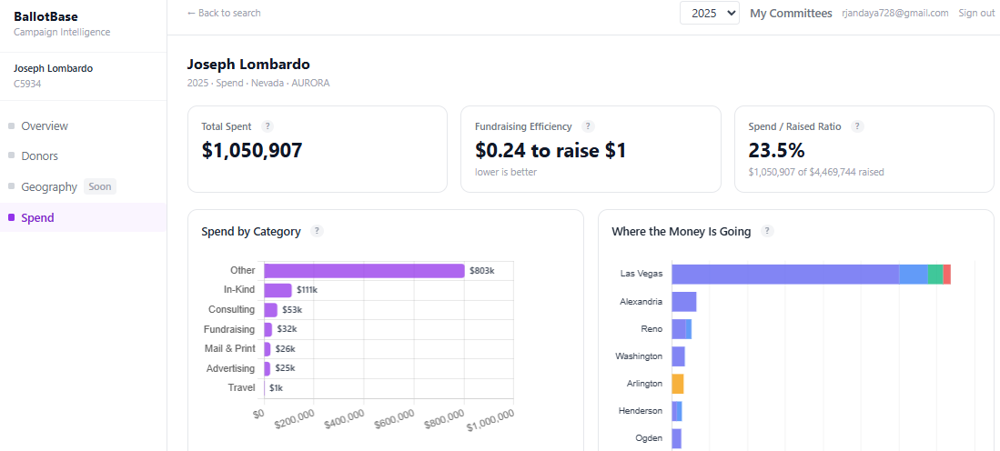

Nevada AURORA data is public — but accessing it means registering an account, submitting a request, and waiting for files to arrive by email. BallotBase does all of that so you don't have to.

Every statewide race, every legislative district, every PAC — if it's in AURORA, BallotBase can analyze it.
BallotBase automatically identifies the race type and applies the right analytics.
Enter any Nevada candidate or committee and get a full analytics dashboard — no AURORA account needed.
No credit card required. We'll reach out personally within 24 hours.